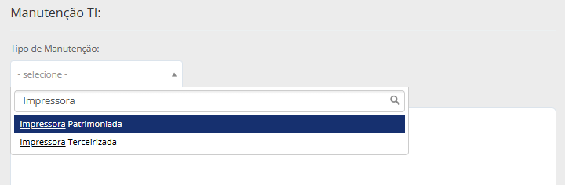
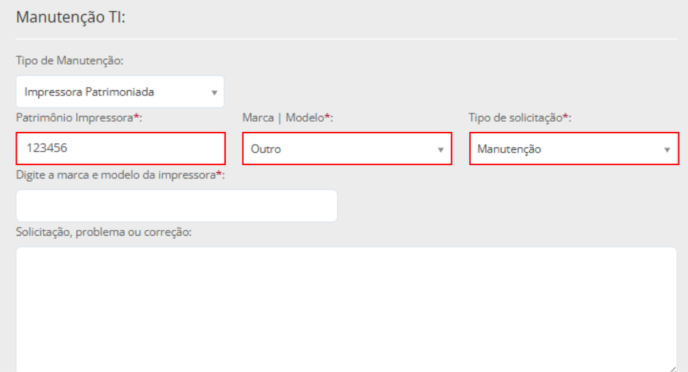
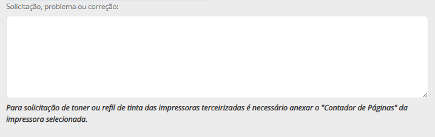
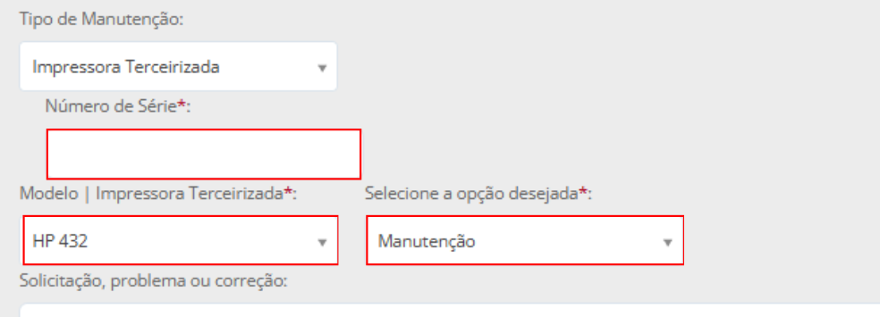
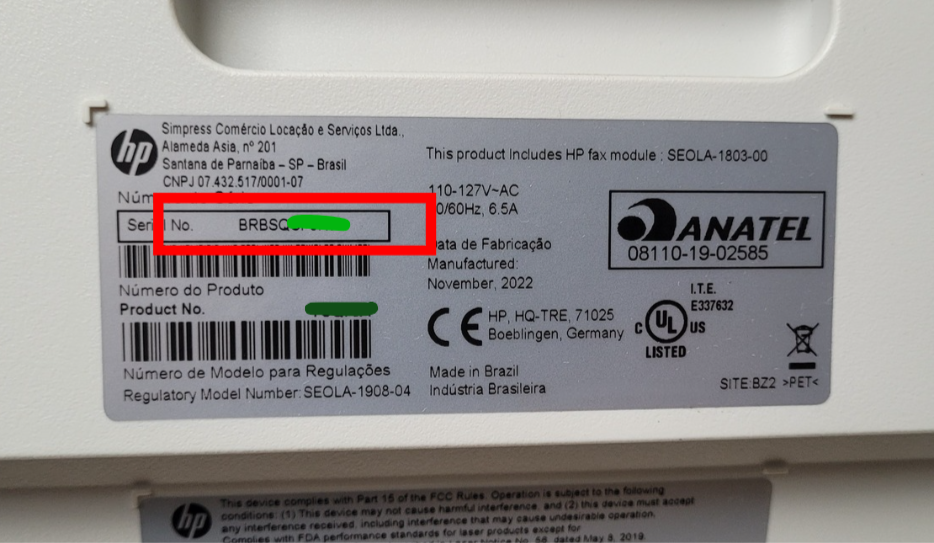
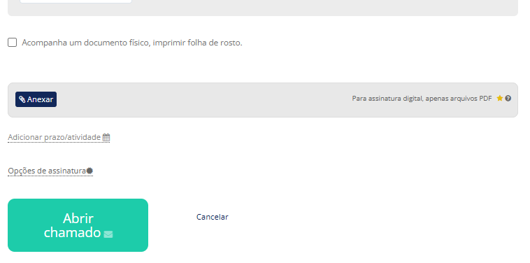

Manutenção de Impressoras
Passo a passo para solicitar manutenção de impressora Patrimoniada ou Terceirizada via 1Doc.
Iniciar Chamado
No menu superior, clique em Novo e selecione a opção Chamado técnico.

Selecionar Assunto
No campo Assunto, digite "SEEDU" ou procure por:
SEEDU :: Chamado Técnico TI.

Identificação
• Unidade Escolar / Setor *: Selecione sua escola na lista (Obrigatório).
• Solicitante: Campo opcional. Preencha apenas se estiver abrindo pedido para outra pessoa.

Tipo de Manutenção
Selecione se a impressora é Patrimoniada (da Prefeitura) ou Terceirizada (Alugada/Locada).

Impressora Patrimoniada
Complete os campos:
• * Patrimônio: Digite o número da plaqueta.
• * Marca/Modelo: Se não souber, escolha "Outro" e digite abaixo.
• * Tipo: Selecione "Manutenção".

No campo Solicitação, problema ou correção, seja o mais claro e detalhado possível. Uma boa descrição ajuda a equipe técnica a resolver o seu chamado muito mais rápido!

Impressora Terceirizada
Preencha o campo Número de Série conforme a etiqueta do equipamento. Para concluir o chamado, siga as mesmas instruções descritas no Passo 5.


Concluir
Para finalizar, clique em Abrir chamado.
